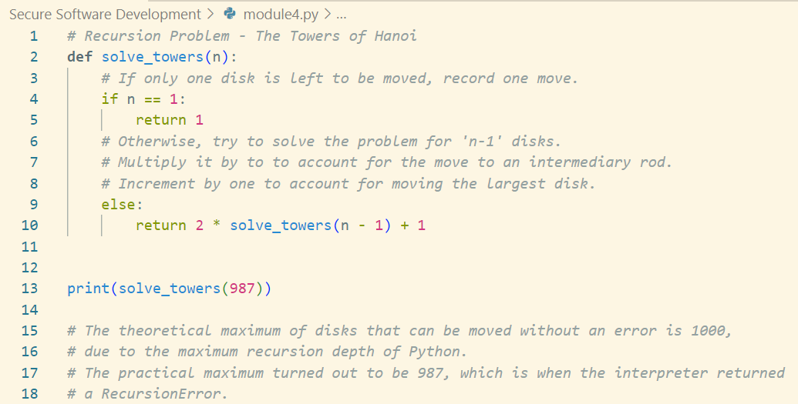
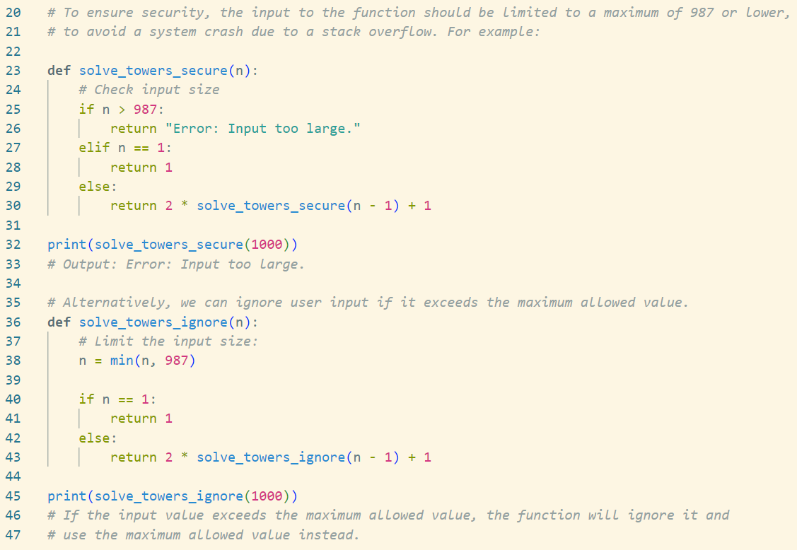
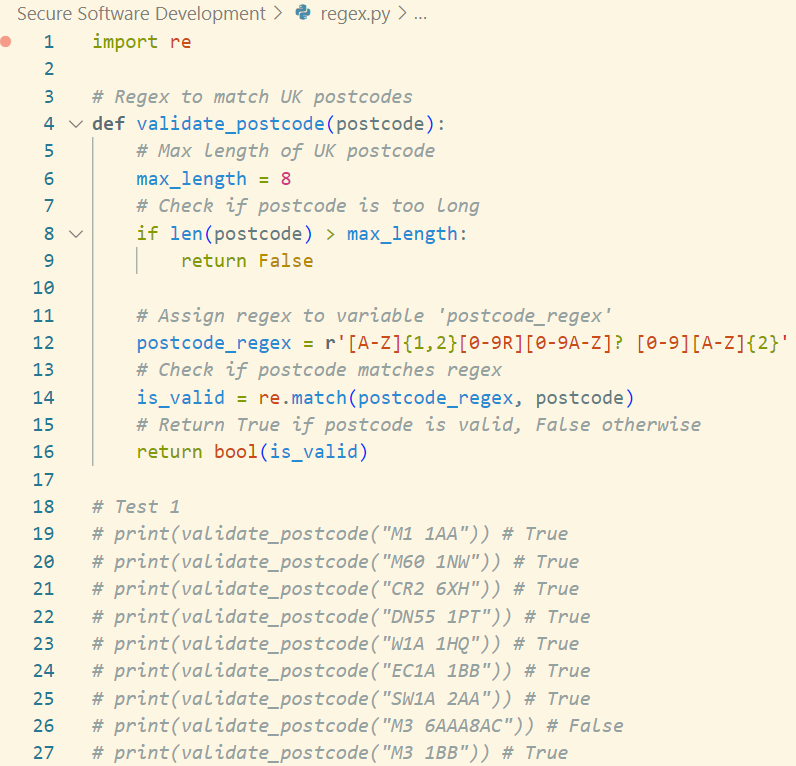

Unit 4: Artefacts
Programming Language Concepts
Part of this unit was to answer the following questions based on the unit's reading material:
- What is ReDOS and what part do 'Evil Regex' play?
- What are the common problems associated with the use of regex? How can these be mitigated?
- How and why could regex be used as part of a security solution?
Answers
ReDOS and Evil Regex
'ReDOS' is essentially the "regular expression" version of a "Denial-of-Service" attack. By using carefully crafted "Evil Regex", i.e. malicious regular expressions, an attacker can overload a system or part of the system that uses the regular expressions, causing the system to crash.
Common Problems
One of the most common problems with regular expressions is that the pattern is defined incorrectly. If a programmer is not careful, a badly defined regex may cause a system to freeze or crash. This can not only be caused by forgetting to set limits or check for certain characters, but also by forgetting edge cases that may occur. Another common problem is that regex are too long or too complicated, making them hard to understand, which directly affects reusability and, arguably, also the security of the code.
These problems may be overcome by thoroughly testing regex, especially with edge cases, to ensure that they work as intended. Another idea might be to keep them as short and concise as possible, to avoid overcomplication. One may also use tools available online, or Python libraries such as "regex101" to test ones regular expressions for errors.
Security Solution
"Regex" most obvious use is input validation. As discussed earlier, regex may be used to match user input with the patterns associated with postcodes, to ensure that what is entered is indeed a valid postcode, without having to search and match a giant database of all existing postcodes. This could be extended to ensuring that users enter valid phone numbers, email addresses, credit card numbers, passport numbers, etc. Essentially, anything that follows a specific pattern can be checked with regex.
Seminar 2 Preparation Activities
Unfortunately, due to work, I was unable to attend the seminar this week. However, I still attempted two exercises on "Recursion" and "Regex" for my own understanding and practice.
Recursion
 Although this mathematical problem seems very difficult at first, when broken down into smaller steps it is relatively simple to solve. I guess that is what recursion is all about - break a large problem down into smaller problems and run the same calculation over and over again until you have solved the entire problem. I tried to explain my code using comments, to make it more reusable and understandable for someone who doesn't know what the problem is about. I only included the code snippets that worked to solve the problem, as I didn't want to clutter the portfolio.
To ensure that my solutions were working correctly, I used a "Tower of Hanoi" simulator to compare its results to my own.
The second problem to solve was to create a Python program that checks whether or not a valid UK postcode had been entered into a system. I first read through the article on the UK postcode format to figure out and understand how UK postcodes work. Being from Germany myself, UK postcodes are a littel unfamiliar, and in Qatar, where I currently live, we don't have any postcodes at all. After having understood the basics, I attempted to improve my understanding of regular expressions in Python by searching through online forums. Although the unit text had explained regex very well, I thought it best to look at other sources too, hoping that it would better my understanding.
This is when I came across a StackOverflow post on using regular expressions to check UK postcodes in JavaScript. Using the knowledge I had gained from the module reading materials and my online research, I ended up with the following code:
I found it very helpful to watch tutorials and read through various forums to learn more about regular expressions and overcome my somewhat lacking pratical experience with regex. However, I did not want to stop there. What if a malicious attacker understood that I was using regex in my code to match postcode patterns? They could use this knowledge to initiate a ReDOS attack, i.e. a "Denial of Service" attack using regex?
What appears to be the most obvious, would be for an attacker to input an enormously large string, which my function would not only fail to validate, but would completely overload the system the function was running on. As I saw when doing the recursion exercise, it only takes so much to overload an interpreter or exceed predefined boundaries within Python. Therefore, I thought it best to limit the input to '8', which is the maximum length of a UK postcode. This way, not matter the length of string fed into the program, the program will not crash. It either rejects the input based on legth, or runs its pattern-matching normally.